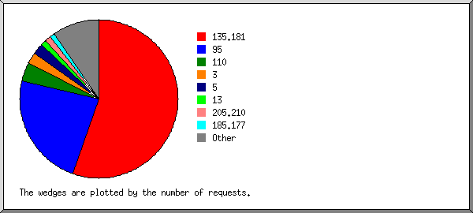
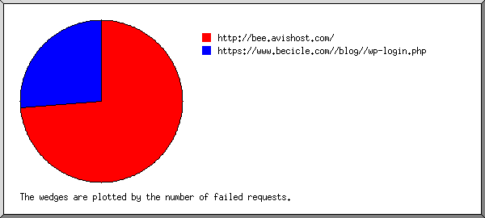
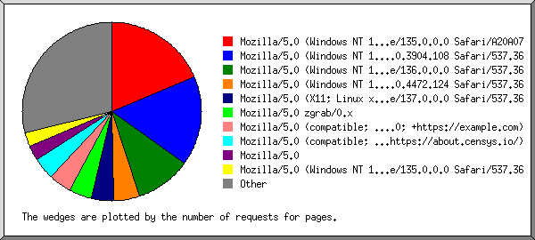
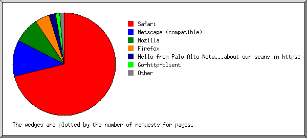
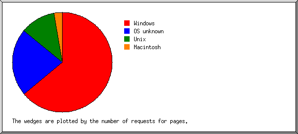
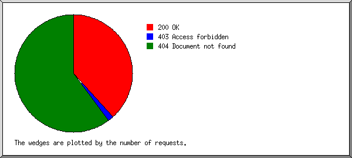
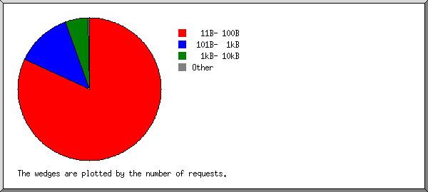
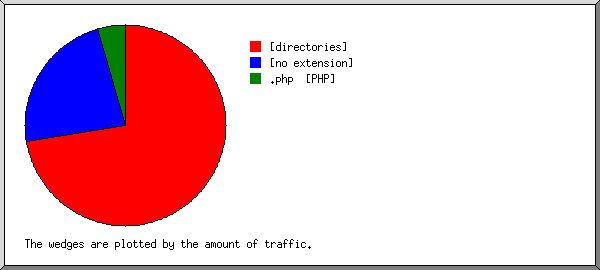
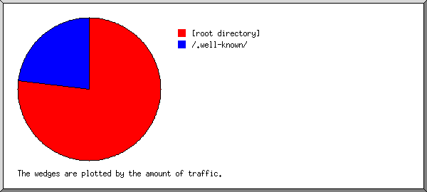
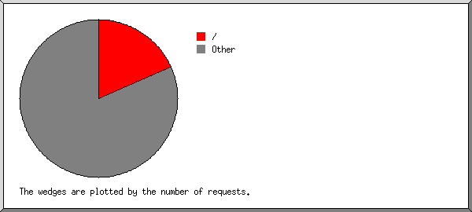

Web Server Statistics for bee.avishost.com
Web Server Statistics for bee.avishost.com
Program started on Mon, Jul 28 2025 at 3:42 PM.
Analyzed requests from Fri, May 02 2025 at 8:39 PM to Mon, Jul 28 2025 at 1:01 PM (86.68 days).
Web Server Statistics for bee.avishost.comProgram started on Mon, Jul 28 2025 at 3:42 PM.
Analyzed requests from Fri, May 02 2025 at 8:39 PM to Mon, Jul 28 2025 at 1:01 PM (86.68 days).
(Go To: Top | General Summary | Monthly Report | Daily Summary | Hourly Summary | Domain Report | Organization Report | Failed Referrer Report | Referring Site Report | Browser Report | Browser Summary | Operating System Report | Status Code Report | File Size Report | File Type Report | Directory Report | Request Report)
Figures in parentheses refer to the 7-day period ending Jul 28 2025 at 3:42 PM.
Successful requests: 877 (62)
Average successful requests per day: 10 (8)
Successful requests for pages: 163 (6)
Average successful requests for pages per day: 1 (0)
Failed requests: 1,413 (1)
Distinct files requested: 699 (1,316)
Distinct hosts served: 109 (142)
Data transferred: 189.26 kilobytes (12.22 kilobytes)
Average data transferred per day: 2.18 kilobytes (1.75 kilobytes)
(Go To: Top | General Summary | Monthly Report | Daily Summary | Hourly Summary | Domain Report | Organization Report | Failed Referrer Report | Referring Site Report | Browser Report | Browser Summary | Operating System Report | Status Code Report | File Size Report | File Type Report | Directory Report | Request Report)
Each unit ( ) represents 2 requests for pages or part thereof.
) represents 2 requests for pages or part thereof.
| month | #reqs | #pages | |
|---|---|---|---|
| May 2025 | 319 | 72 |   |
| Jun 2025 | 264 | 25 |  |
| Jul 2025 | 294 | 66 | |
Busiest month: May 2025 (72 requests for pages).
(Go To: Top | General Summary | Monthly Report | Daily Summary | Hourly Summary | Domain Report | Organization Report | Failed Referrer Report | Referring Site Report | Browser Report | Browser Summary | Operating System Report | Status Code Report | File Size Report | File Type Report | Directory Report | Request Report)
Each unit () represents 2 requests for pages or part thereof.
| day | #reqs | #pages | |
|---|---|---|---|
| Sun | 121 | 17 | |
| Mon | 114 | 13 |  |
| Tue | 102 | 10 | |
| Wed | 115 | 15 | |
| Thu | 115 | 17 | |
| Fri | 138 | 32 |  |
| Sat | 172 | 59 | |
(Go To: Top | General Summary | Monthly Report | Daily Summary | Hourly Summary | Domain Report | Organization Report | Failed Referrer Report | Referring Site Report | Browser Report | Browser Summary | Operating System Report | Status Code Report | File Size Report | File Type Report | Directory Report | Request Report)
Each unit () represents 1 request for a page.
| hour | #reqs | #pages | |
|---|---|---|---|
| 0 | 11 | 11 | |
| 1 | 98 | 7 | |
| 2 | 2 | 2 | |
| 3 | 2 | 2 | |
| 4 | 87 | 1 | |
| 5 | 2 | 2 | |
| 6 | 4 | 4 | |
| 7 | 91 | 6 | |
| 8 | 1 | 1 | |
| 9 | 6 | 5 | |
| 10 | 90 | 5 | |
| 11 | 0 | 0 | |
| 12 | 3 | 3 | |
| 13 | 88 | 1 | |
| 14 | 10 | 10 | |
| 15 | 2 | 2 | |
| 16 | 92 | 5 | |
| 17 | 3 | 3 | |
| 18 | 6 | 6 | |
| 19 | 94 | 9 | |
| 20 | 11 | 5 | |
| 21 | 23 | 21 | |
| 22 | 140 | 41 | |
| 23 | 11 | 11 | |
(Go To: Top | General Summary | Monthly Report | Daily Summary | Hourly Summary | Domain Report | Organization Report | Failed Referrer Report | Referring Site Report | Browser Report | Browser Summary | Operating System Report | Status Code Report | File Size Report | File Type Report | Directory Report | Request Report)
Listing domains, sorted by the amount of traffic.
| #reqs | %bytes | domain |
|---|---|---|
| 877 | 100% | [unresolved numerical addresses] |
(Go To: Top | General Summary | Monthly Report | Daily Summary | Hourly Summary | Domain Report | Organization Report | Failed Referrer Report | Referring Site Report | Browser Report | Browser Summary | Operating System Report | Status Code Report | File Size Report | File Type Report | Directory Report | Request Report)

Listing the top 20 organizations by the number of requests, sorted by the number of requests.
| #reqs | %bytes | organization |
|---|---|---|
| 485 | 16.02% | 135.181 |
| 204 | 6.74% | 95 |
| 34 | 3.07% | 110 |
| 20 | 15.57% | 3 |
| 20 | 3.94% | 5 |
| 11 | 6.97% | 13 |
| 10 | 10.28% | 205.210 |
| 9 | 3.50% | 185.177 |
| 6 | 1.28% | 18 |
| 5 | 1.67% | 34 |
| 4 | 1.94% | 167.234 |
| 4 | 0.84% | 205.169 |
| 4 | 4.62% | 196.251 |
| 3 | 2.65% | 207.154 |
| 3 | 0.11% | 192.175 |
| 3 | 3.54% | 149.88 |
| 3 | 0.81% | 35 |
| 2 | 0.09% | 16 |
| 2 | 0.79% | 167.94 |
| 2 | 0.53% | 206.168 |
| 43 | 15.04% | [not listed: 34 organizations] |
(Go To: Top | General Summary | Monthly Report | Daily Summary | Hourly Summary | Domain Report | Organization Report | Failed Referrer Report | Referring Site Report | Browser Report | Browser Summary | Operating System Report | Status Code Report | File Size Report | File Type Report | Directory Report | Request Report)

Listing referring URLs, sorted by the number of failed requests.
| #reqs | URL |
|---|---|
| 14 | http://bee.avishost.com/ |
| 5 | https://www.becicle.com//blog//wp-login.php |
(Go To: Top | General Summary | Monthly Report | Daily Summary | Hourly Summary | Domain Report | Organization Report | Failed Referrer Report | Referring Site Report | Browser Report | Browser Summary | Operating System Report | Status Code Report | File Size Report | File Type Report | Directory Report | Request Report)

Listing referring sites, sorted by the number of requests.
| #reqs | site |
|---|---|
| 26 | http://bee.avishost.com/ |
| 1 | https://www.google.co.kr/ |
| 1 | https://www.becicle.com/ |
(Go To: Top | General Summary | Monthly Report | Daily Summary | Hourly Summary | Domain Report | Organization Report | Failed Referrer Report | Referring Site Report | Browser Report | Browser Summary | Operating System Report | Status Code Report | File Size Report | File Type Report | Directory Report | Request Report)

Listing browsers with at least 1 request for a page, sorted by the number of requests for pages.
| #reqs | #pages | browser |
|---|---|---|
| 34 | 28 | Mozilla/5.0 (Windows NT 10.0; Win64; x64) AppleWebKit/537.36 (KHTML, like Gecko) Chrome/135.0.0.0 Safari/A20A07 |
| 24 | 24 | Mozilla/5.0 (Windows NT 10.0; Win64; x64) AppleWebKit/537.36 (KHTML, like Gecko) Chrome/78.0.3904.108 Safari/537.36 |
| 17 | 15 | Mozilla/5.0 (Windows NT 10.0; Win64; x64) AppleWebKit/537.36 (KHTML, like Gecko) Chrome/136.0.0.0 Safari/537.36 |
| 9 | 7 | Mozilla/5.0 (Windows NT 10.0; Win64; x64) AppleWebKit/537.36 (KHTML, like Gecko) Chrome/91.0.4472.124 Safari/537.36 |
| 6 | 6 | Mozilla/5.0 (X11; Linux x86_64) AppleWebKit/537.36 (KHTML, like Gecko) Chrome/137.0.0.0 Safari/537.36 |
| 6 | 6 | Mozilla/5.0 zgrab/0.x |
| 6 | 6 | Mozilla/5.0 (compatible; CMS-Checker/1.0; +https://example.com) |
| 6 | 6 | Mozilla/5.0 (compatible; CensysInspect/1.1; +https://about.censys.io/) |
| 4 | 4 | Mozilla/5.0 |
| 4 | 4 | Mozilla/5.0 (Windows NT 10.0; Win64; x64) AppleWebKit/537.36 (KHTML, like Gecko) Chrome/135.0.0.0 Safari/537.36 |
| 3 | 3 | Mozilla/5.0 (X11; Linux x86_64) AppleWebKit/537.36 (KHTML, like Gecko) Chrome/135.0.0.0 Safari/537.36 |
| 3 | 3 | Hello from Palo Alto Networks, find out more about our scans in https://docs-cortex.paloaltonetworks.com/r/1/Cortex-Xpanse/Scanning-activity |
| 3 | 3 | Mozilla/5.0 (compatible; InternetMeasurement/1.0; +https://internet-measurement.com/) |
| 2 | 2 | Mozilla/5.0 (X11; Linux x86_64; rv:136.0) Gecko/20100101 Firefox/136.0 |
| 2 | 2 | Mozilla/5.0 (X11; Ubuntu; Linux x86_64; rv:134.0) Gecko/20100101 Firefox/134.0 |
| 2 | 2 | Mozilla/5.0 (compatible; NetcraftSurveyAgent/1.0; +info@netcraft.com) |
| 2 | 2 | Mozilla/5.0 (X11; Linux x86_64; rv:137.0) Gecko/20100101 Firefox/137.0 |
| 3 | 2 | Go-http-client/1.1 |
| 2 | 2 | Mozilla/5.0 (Windows NT 10.0; Win64; x64) AppleWebKit/537.36 (KHTML, like Gecko) Chrome/70.0.3538.102 Safari/537.36 Edge/18.19582 |
| 2 | 2 | Mozilla/5.0 (Windows NT 10.0; Win64; x64) AppleWebKit/537.36 (KHTML, like Gecko) Chrome/95.0.4638.69 Safari/537.36 |
| 2 | 2 | Mozilla/5.0 (iPhone; CPU iPhone OS 14_4 like Mac OS X) AppleWebKit/605.1.15 (KHTML, like Gecko) Version/15.4 Mobile/15E148 Safari/604.1 |
| 2 | 2 | Mozilla/5.0 (Windows NT 10.0; Win64; x64) AppleWebKit/537.36 Chrome/121.0.0.0 |
| 1 | 1 | Mozilla/5.0 (Windows NT 6.1; Win64; x64) AppleWebKit/537.36 (KHTML, like Gecko) Chrome/83.0.4103.61 Safari/537.36 |
| 1 | 1 | Mozilla/5.0 (Windows NT 10.0; Win64; x64) AppleWebKit/537.36 (KHTML, like Gecko) Chrome/104.0.0.0 Safari/537.36 |
| 1 | 1 | Mozilla/5.0 (Linux; Android 6.0; HTC One M9 Build/MRA835696) AppleWebKit/537.36 (KHTML, like Gecko) Chrome/52.0.2276.98 Mobile Safari/537.3 |
| 1 | 1 | Mozilla/5.0 (Macintosh; Intel Mac OS X 10_15_7) AppleWebKit/537.36 (KHTML, like Gecko) Chrome/112.0.5615.138 Safari/537.36 |
| 1 | 1 | Mozilla/5.0 (Windows NT 10.0; Win64; x64) AppleWebKit/537.36 (KHTML, like Gecko) Chrome/136.0.0.0 Safari/25E443 |
| 1 | 1 | python-httpx/0.28.1 |
| 1 | 1 | Mozilla/5.0 (Windows NT 10.0; Win64; x64) AppleWebKit/537.36 (KHTML, like Gecko) Chrome/131.0.0.0 Safari/537.36 |
| 1 | 1 | Mozilla/5.0 (Windows NT 10.0; Win64; x64) AppleWebKit/537.36 (KHTML, like Gecko) Chrome/117.0.5938.132 Safari/537.36 |
| 1 | 1 | Mozilla/5.0 (Windows NT 6.1; WOW64) AppleWebKit/537.36 (KHTML, like Gecko) Chrome/36.0.1985.67 Safari/537.36 |
| 1 | 1 | Mozilla/5.0 (Macintosh; Intel Mac OS X 10_14_6) AppleWebKit/537.36 (KHTML, like Gecko) Chrome/76.0.3809.132 Safari/537.36 |
| 1 | 1 | Mozilla/5.0 (X11; Ubuntu; Linux i686; rv:24.0) Gecko/20100101 Firefox/24.0 |
| 1 | 1 | Mozilla/5.0 (compatible; MSIE 10.0; Windows NT 6.2; WOW64; Trident/8.0) |
| 1 | 1 | Mozilla/5.0 (Windows NT 10.0; Win64; x64) AppleWebKit/537.36 (KHTML, like Gecko) Chrome/126.0.0.0 Safari/537.36 Edg/126.0.0.0 |
| 1 | 1 | Mozilla/5.0 (Windows NT 10.0; Win64; x64) AppleWebKit/537.36 (KHTML, like Gecko) Chrome/79.0.3945.79 Safari/537.36 |
| 1 | 1 | Mozilla/5.0 (Windows NT 10.0; Win64; x64) AppleWebKit/537.36 (KHTML, like Gecko) Chrome/58.0.3029.110 Safari/537.3 |
| 1 | 1 | Mozilla/5.0 (Windows NT 10.0) AppleWebKit/537.36 (KHTML, like Gecko) Chrome/106.0.0.0 Safari/537.36 |
| 703 | 0 | [not listed: 3 browsers] |
(Go To: Top | General Summary | Monthly Report | Daily Summary | Hourly Summary | Domain Report | Organization Report | Failed Referrer Report | Referring Site Report | Browser Report | Browser Summary | Operating System Report | Status Code Report | File Size Report | File Type Report | Directory Report | Request Report)

Listing browsers with at least 1 request for a page, sorted by the number of requests for pages.
| # | #reqs | #pages | browser |
|---|---|---|---|
| 1 | 120 | 106 | Safari |
| 83 | 75 | Safari/537 | |
| 34 | 28 | Safari/A20A07 | |
| 2 | 2 | Safari/604 | |
| 1 | 1 | Safari/25E443 | |
| 2 | 27 | 17 | Netscape (compatible) |
| 3 | 12 | 12 | Mozilla |
| 4 | 7 | 7 | Firefox |
| 2 | 2 | Firefox/134 | |
| 2 | 2 | Firefox/136 | |
| 2 | 2 | Firefox/137 | |
| 1 | 1 | Firefox/24 | |
| 5 | 3 | 3 | Hello from Palo Alto Networks, find out more about our scans in https: |
| 3 | 3 | Hello from Palo Alto Networks, find out more about our scans in https://docs-cortex | |
| 6 | 3 | 2 | Go-http-client |
| 3 | 2 | Go-http-client/1 | |
| 7 | 1 | 1 | python-httpx |
| 1 | 1 | python-httpx/0 | |
| 8 | 1 | 1 | MSIE |
| 1 | 1 | MSIE/10 | |
| 689 | 0 | [not listed: 1 browser] |
(Go To: Top | General Summary | Monthly Report | Daily Summary | Hourly Summary | Domain Report | Organization Report | Failed Referrer Report | Referring Site Report | Browser Report | Browser Summary | Operating System Report | Status Code Report | File Size Report | File Type Report | Directory Report | Request Report)

Listing operating systems, sorted by the number of requests for pages.
| # | #reqs | #pages | OS |
|---|---|---|---|
| 1 | 109 | 95 | Windows |
| 102 | 92 | Windows NT | |
| 7 | 3 | Unknown Windows | |
| 2 | 733 | 33 | OS unknown |
| 3 | 17 | 17 | Unix |
| 17 | 17 | Linux | |
| 4 | 4 | 4 | Macintosh |
(Go To: Top | General Summary | Monthly Report | Daily Summary | Hourly Summary | Domain Report | Organization Report | Failed Referrer Report | Referring Site Report | Browser Report | Browser Summary | Operating System Report | Status Code Report | File Size Report | File Type Report | Directory Report | Request Report)

Listing status codes, sorted numerically.
| #reqs | status code |
|---|---|
| 877 | 200 OK |
| 35 | 403 Access forbidden |
| 1378 | 404 Document not found |
(Go To: Top | General Summary | Monthly Report | Daily Summary | Hourly Summary | Domain Report | Organization Report | Failed Referrer Report | Referring Site Report | Browser Report | Browser Summary | Operating System Report | Status Code Report | File Size Report | File Type Report | Directory Report | Request Report)

| size | #reqs | %bytes |
|---|---|---|
| 0 | 2 | |
| 1B- 10B | 0 | |
| 11B- 100B | 718 | 23.79% |
| 101B- 1kB | 111 | 24.96% |
| 1kB- 10kB | 46 | 51.25% |
(Go To: Top | General Summary | Monthly Report | Daily Summary | Hourly Summary | Domain Report | Organization Report | Failed Referrer Report | Referring Site Report | Browser Report | Browser Summary | Operating System Report | Status Code Report | File Size Report | File Type Report | Directory Report | Request Report)

Listing extensions with at least 0.1% of the traffic, sorted by the amount of traffic.
| #reqs | %bytes | extension |
|---|---|---|
| 163 | 72.35% | [directories] |
| 699 | 23.20% | [no extension] |
| 15 | 4.45% | .php [PHP] |
(Go To: Top | General Summary | Monthly Report | Daily Summary | Hourly Summary | Domain Report | Organization Report | Failed Referrer Report | Referring Site Report | Browser Report | Browser Summary | Operating System Report | Status Code Report | File Size Report | File Type Report | Directory Report | Request Report)

Listing directories with at least 0.01% of the traffic, sorted by the amount of traffic.
| #reqs | %bytes | directory |
|---|---|---|
| 178 | 76.80% | [root directory] |
| 699 | 23.20% | /.well-known/ |
(Go To: Top | General Summary | Monthly Report | Daily Summary | Hourly Summary | Domain Report | Organization Report | Failed Referrer Report | Referring Site Report | Browser Report | Browser Summary | Operating System Report | Status Code Report | File Size Report | File Type Report | Directory Report | Request Report)

Listing files with at least 20 requests, sorted by the number of requests.
| #reqs | %bytes | last time | file |
|---|---|---|---|
| 163 | 72.35% | Jul/27/25 8:45 AM | / |
| 714 | 27.65% | Jul/28/25 1:01 PM | [not listed: 694 files] |